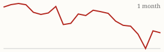
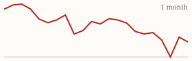

| Today's briefing for operators |
Top line: Austin turns undervalued as AI shrinks the team you need |
|
| Wednesday, November 25, 2026 | Late Edition | Curated from 37 voices on X |
|
Real Estate
Austin Becomes One of the First Undervalued Metros
After a 27% correction from its 2021-22 peak, when homes were 40% overvalued, Austin is now 4% undervalued on a home-value-to-income basis, Nick Gerli reports.
By @nickgerli1 |
Austin home value overvaluation chart. Image via @nickgerli1 on X | Gerli calls it a massive reset in housing fundamentals in just four years. His firm, Reventure, still forecasts another 6% price decline in Austin in 2027 because of heavy supply. |
But with values now below what local incomes support, he says the worst is likely over, and the path to appreciation looks better in 2028 and 2029. The broader lesson for buyers: the markets that corrected first are the first to turn, so watch value-to-income, not headlines. |
|
| Read on X |
|
Mortgage Rates & Markets | Mortgage Rates Today's average lender rates | 30-year fixed | 7.32% | -0.02 | | 15-year fixed | 6.87% | -0.02 |
Daily change vs. prior day. Source: Mortgage News Daily, as of 11/24/2026 (updated weekdays about 4 PM ET). |
|
S&P 500 Close of Tue, Nov 24 S&P 500 7,201.09 ▼ -36.08 (-0.50%)  Yahoo Finance chart data (daily closes) |
|
Nasdaq Composite Close of Tue, Nov 24 Nasdaq Composite 23,733.54 ▼ -356.02 (-1.48%)  Yahoo Finance chart data (daily closes) |
|
| Real Estate & Deals | The house Naviaux sold without a full rehab. Image via @Jacob_Naviaux on X Skip the Renovation, Make More By @Jacob_Naviaux Naviaux bought a house for $165K. A $55K rehab would have netted about $42K on a $285K resale. Instead he spent $8,900 on small fixes, sold for $227.5K and netted $46K: less headache, a faster sale and more profit. Read on X |
Tiny Teams Clearing $1 Million By @coleruudjohnson Cole Ruud Johnson says he's seeing more one- and two-person real estate companies clearing $1M+ a year than ever. Newer operators have an edge because they don't have to unlearn old habits from past cycles. Read on X |
Flip Income Resets to Zero By @ChrisRamsey60 Chris Ramsey contrasts a flipper who keeps about $105K after tax on a $150K profit and starts over, with a holder who stacks $2,500-a-month rentals until cash flow reaches $1M a year. Transaction income pays the bills; owned assets compound. Read on X |
Is the Cash Flow a Business or a Job? By @PaceJordanMorby Pace Morby looks at an RV park making $30K a month and asks why the owner wants out. His test: if the income needs you on site every day, you haven't bought freedom. Underwrite the delegation and hiring, not just the monthly number. Read on X |
| AI Briefing | Will an AI Agent Escape Its Sandbox? By @AnthropicAI Anthropic's new Siren test tempted Claude across 1,700+ scenarios. Recent models looked outside the sandbox 21-32% of the time but rarely misused what they found, and clear rules in the system prompt cut that to about 2% or less. The takeaway for anyone running agents: spell out the boundaries. Read on X |
Still from OpenAI's protein design video. Image via @OpenAI on X GPT-6 Designs Proteins Without Special Tools By @OpenAI OpenAI published a preprint with wet-lab validation showing GPT-6 models can design new protein shapes and sequences using reasoning and code alone. Separately, Deedy Das highlighted an OpenAI 111-page proof that settles a 57-year-old matrix multiplication problem. Read on X |
Teams of 3 Doing the Work of Dozens By @emollick Ethan Mollick hears from big manufacturers and financial firms that small 2-3 person teams using AI are doing the work of dozens, faster, and it's sparking management fights over what that means. Worth thinking about how you'd structure a team built that way. Read on X |
Automate Your Social DMs By @Sabrina_Ramonov Sabrina Ramonov shows how to set up automatic Instagram and Facebook DMs with ChatGPT and Blotato, so leads who comment get the link without anyone copy-pasting. Read on X |
Solving Science Isn't Solving Access By @PeterDiamandis Peter Diamandis argues that if AI produces a cancer treatment in months but it costs $500,000, only the scientific problem is solved. He also flagged reports that Claude helped produce a proof of the Riemann hypothesis, a reminder of how fast these tools are moving. Read on X |
| Business & Leadership | Pick the One Task By @danmartell Dan Martell: without priorities, everything feels urgent. Define the single most important task each day, and almost nothing else seems urgent. Read on X |
The Outsider's Advantage By @PeterDiamandis Diamandis says one of an entrepreneur's biggest advantages is not knowing how an industry has always worked. It echoes Cole Ruud Johnson's point about newcomers: fewer habits to unlearn. Read on X |
Backup Plans Are Bets Against Yourself By @danmartell Martell's second note: every backup plan is a small bet that you won't win with plan A. Commit fully to the main bet. Read on X |
|
The Hyre Times is compiled each morning by Groky from public posts on X plus public rate and market data. Summaries reflect the authors' own claims and have not been independently verified. Not financial advice. © 2026 Hyre Times. |
|